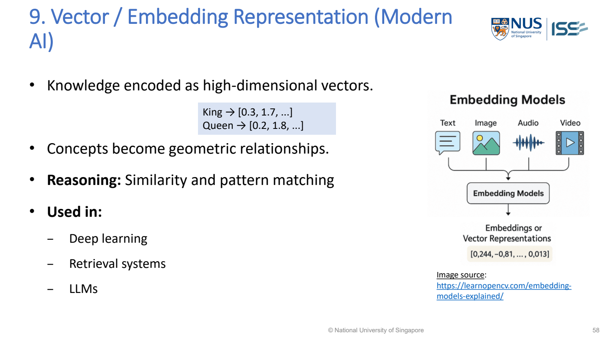

Forms of Knowledge Representation （知識表示形式）
How do we store what the system knows, so that it can use that knowledge to answer or act? This is a core exam topic: compare representation forms and justify which one fits a scenario. Predicate logic is only ONE of these forms.
The lecture’s opening list
Natural Language (Text) · Formula · Formal · Semantic Web · Frames · Ontology · Knowledge Graph · Database · Rules — “and many other forms…” (PDF p.46).
The next slides develop the ten forms below. This is not a list of ten compulsory components: select the form(s) that suit the scenario.
Original overview drawing of the lecture’s representation/inference distinction; the table examples are from MR-Day 2_JR_v1.pdf, PDF pp.48–58, with the Mary/John semantic-network example from p.50.
All ten forms: what is stored, example, and how it is used
| Form | What is stored? | Lecture example | Reasoning / use |
|---|---|---|---|
| 1. Logical representation 邏輯表示 | Facts and logical statements | Student(x) → Human(x) | Deduction; what necessarily follows? Read the existing concept →PDF p.48 |
| 2. Rule-based representation 規則式表示 | IF–THEN conditions and conclusions | IF fever AND cough THEN flu | Forward/backward chaining; apply expert conditions. Read the existing concept →PDF p.49 |
| 3. Semantic networks 語義網路 | Concept/entity nodes and labelled relationships | Mary → MemberOf → Female Persons → SubsetOf → Persons | Inheritance and graph traversal. Read the existing concept →PDF p.50 |
| 4. Frames 框架 | Structured objects with slots, values and relations | Person: name=Alice; occupation=Engineer; employer=ABC | Inheritance/defaults; describe an object or situation. Read the existing concept →PDF p.51 |
| 5. Ontologies 本體 | Formal classes, properties, hierarchies and constraints | Professor ⊆ Academic; Alice is Professor → Alice is Academic | Classification and consistency checking; define domain meaning. Read the existing concept →PDF p.52 |
| 6. Constraint-based representation 約束式表示 | Variables, allowed values and constraints | A ≠ B; B ≠ C; A + C = 10 | Constraint satisfaction; scheduling/configuration. Read the existing concept →PDF p.54 |
| 7. Probabilistic representation 機率式表示 | Uncertain knowledge and conditional probabilities | P(WetRoad | Rain); Rain also influences Traffic | Probabilistic inference; incomplete/noisy evidence. Read the existing concept →PDF p.55 |
| 8. Case-based representation 案例式表示 | Previous examples with their outcomes | Past symptoms → diagnosis → treatment | Analogy: retrieve a similar case, then adapt. Read the existing concept →PDF p.56 |
| 9. Vector / embedding representation 向量／嵌入表示 | Concepts/items encoded as high-dimensional vectors | King → [0.3, 1.7, …]; Queen → [0.2, 1.8, …] | Similarity and pattern matching; retrieval and neural models. Read the representation format →PDF p.57 |
| 10. Knowledge graphs 知識圖譜 | Actual entities/facts stored as linked triples | (Alice, teaches, AI101); (Bob, enrollsIn, AI101) | Graph reasoning, queries and link prediction. Read the existing concept →PDF p.58 |
Examples such as fever → flu illustrate rule structure in the lecture, not a clinically sufficient diagnostic rule.
Distinctions you need in an exam
- Frame versus rule: a frame stores an object’s slots; a rule says what follows when conditions hold. A frame-based knowledge base still needs a stated procedure for using those facts.
- Ontology versus knowledge graph: the ontology defines concepts, properties and allowed relationships; the graph stores actual entities and facts. They can be used together.
- Semantic network versus ontology: both can show relationships; the ontology adds formal class definitions/constraints and stronger machine-checkable meaning. A labelled graph alone is not automatically a formal ontology.
- Probability versus vector similarity: P(D|H) expresses uncertainty under a model; cosine similarity compares representations. A similarity score is not automatically a probability.
- Representation versus algorithm: IF–THEN rules are stored knowledge; forward/backward chaining is how the engine uses them. A database is a storage mechanism, not a complete reasoning method.
Apply it to the sample questions
| Question clue | Representation to discuss | What to explain |
|---|---|---|
| 5001 Q1(c): objects, qualitative slots, inheritance | Frames | Parent/child frames, named slots, relationships; distinguish is-a from part-of. |
| 5001 Q1(b): existing question–answer collection | Stored approved Q&A plus question vectors | Embed → compare → retrieve the linked answer; a graph or generative model is not automatically required. |
| 5001 Q2(d): internal knowledge design | Justified frames + rules is one possible design | Show stored structures AND the engine/procedure that uses them; do not just name a knowledge base. |
| 5001 Q1(d): ordered query records with hidden states | Probabilistic temporal model: HMM (Hidden Markov Model；隱藏馬可夫模型) | Define hidden state versus observation and how the sequence is scored. |
These are proposed study mappings, not an official answer key. Choose from required output, available knowledge/data and uncertainty — not a keyword alone.
Lecture references: MR-Day 2_JR_v1.pdf · section 2.2.1 · PDF pp.43, 46–58. Viewer page numbers and printed slide numbers differ. Detailed predicate logic remains on its existing page and in MR Day 4.

MR-Day 2_JR_v1.pdf · PDF p.57 / printed slide 58. Original supplied slide, not redrawn.
What to draw / write: Vector / embedding representation
King → [0.3, 1.7, …] Queen → [0.2, 1.8, …]
- Vector coordinates
- Numbers representing an item/concept in the learned feature space.
- …
- The remaining coordinates; the displayed vectors are partial.
- Shared space
- Use the same representation model before comparing vectors.
Exam answer: Show item/text → embedding model → vector, then the comparison/retrieval step if required. Do not label a similarity score as a probability. Do not invent semantic names for individual coordinates unless the lecture/model defines them.
MR-Day 2_JR_v1.pdf · PDF p.57
Representation formats: what the examiner can ask you to produce
Use the format for the named representation, not just its definition. Each link opens the existing concept explanation and its original lecture slide.
| Form | Write / draw this structure | Details |
|---|---|---|
| Logical representation | ∀x (Student(x) → Human(x)) Student(Alice) Therefore: Human(Alice) | Format, symbols and exam instructions → |
| Rule-based representation | IF fever AND cough THEN flu | Format, symbols and exam instructions → |
| Semantic network | Mary ─MemberOf→ Female Persons Female Persons ─SubsetOf→ Persons Persons ─SubsetOf→ Mammals Mary ─SisterOf→ John | Format, symbols and exam instructions → |
| Frames | Person ├─ Name: Alice ├─ Occupation: Engineer └─ Employer: ABC Corp | Format, symbols and exam instructions → |
| Ontologies | Classes: Person, Student, Professor, Course Student ⊆ Person Professor ⊆ Person Professor ─teaches→ Course Student ─enrolls_in→ Course Professor ─advises→ Student | Format, symbols and exam instructions → |
| Constraint-based representation | Variables: A, B, C Domains: state the allowed values for A, B, C Constraints: A ≠ B B ≠ C A + C = 10 | Format, symbols and exam instructions → |
| Probabilistic representation | Rain ─→ WetRoad Rain ─→ Traffic P(WetRoad | Rain) | Format, symbols and exam instructions → |
| Case-based representation | Case #101 Symptoms → Diagnosis → Treatment | Format, symbols and exam instructions → |
| Vector / embedding representation | King → [0.3, 1.7, …] Queen → [0.2, 1.8, …] | Format, symbols and exam instructions → |
| Knowledge graphs | (Alice, teaches, AI101) (Alice, worksFor, NUS) (Bob, enrollsIn, AI101) (Alice, advises, Bob) | Format, symbols and exam instructions → |